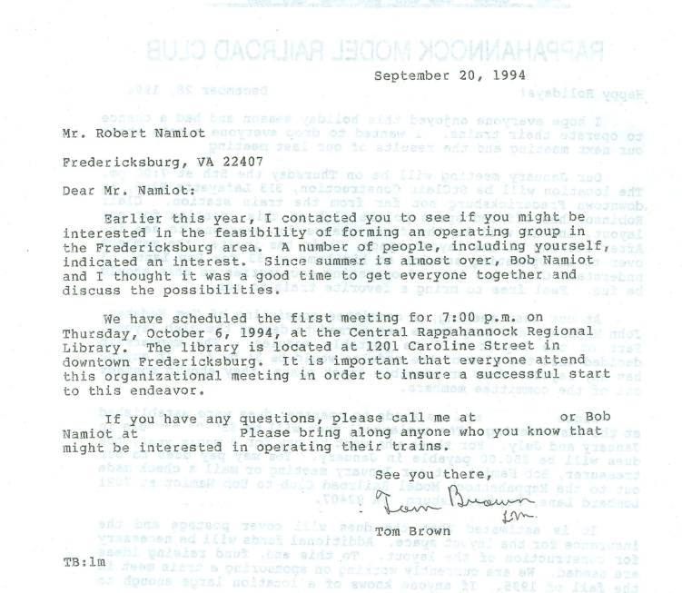

Rappahannock Model Railroaders (RMR) Incorporated
Launched in September 2010, Rappahannock Model Railroaders, Inc. (RMR) is the only 501(c)(3) non-profit organization in the Fredericksburg, Virginia, area and adjoining counties devoted to the development, promotion, and enjoyment of the hobby of model railroading; the education of the public regarding the history, operation, collection and preservation of toy trains and; the history of railroading in America. RMR is the successor organization to the Rappahannock Model Railroad Club, Inc. (RMRRC) which also operated in the Fredericksburg area. RMRRC has provided the resources and expertise for the formation of RMR. As well as inheriting RMRRC’s assets, RMR inherits the enthusiasm and strengths of its preceding organization and, within its non-profit venue, will greatly expand its scope in the areas of education and community outreach. The RMR mission is to promote model railroading. RMR coordinates and participates with other hobby and model railroad-related organizations, including national associations and manufacturers, to provide training, help, and assistance to groups, organizations, and the public community within its area of influence. RMR assistance can be in the form of providing expert speakers, demonstrations and workshops, and both toy and model railroad operating displays and exhibits. RMR’s vision is to expand its role of increasing public awareness, both within its present area of influence and to areas beyond. RMR strives to increase its size and influence and to inform the greatest number of persons about the rewards and enjoyment of model railroading, of toy train operations and collecting, and of the rich history of railroading in America.
Rappahannock Model Railroad Club (RMRRC)
The group which eventually became RMRRC started meeting in the Central Rappahannock Regional Library in about 1987. Those present were: Tom Dunn, John Paraskevas, Bob Namiot, Tom Brown, Max Quarles, Bob Duerden, and John McKeown. Tom, John and Max operated “The Choo Choo Attic”, first on Sophia Street, and then on Princess Anne Street (next to the Step-Down) for about five years. Bob Duerden operated “The Train Store” across from Dunning Mills. The group set up a 3’x 6′ layout each Christmas at the Library; but it didn’t work well, because the layout wasn’t continuously manned, and kids routinely derailed the trains. RMRRC formally got started with a September 1994 letter from Tom Brown to Robert Namiot scheduling the first public meeting at 7:00 p.m. on Thursday, October 6, 1994, at the Central Rappahannock Regional Library. In the early 1990’s Bob Duerden scaled back significantly and moved his store to Hudgins Road. In exchange for free rent, and operating trains, RMRRC members agreed to staff Bob’s store on Saturdays. He eventually closed the store, and RMRRC began to pay him rent. RMRRC operated as a Virginia corporation until 2010.
2014 The Blue Comet Award
RMR was proud to have been select as one of the two co-winners of the 2014 The Bule Comet Award.
To help popularize O gauge model railroading, M.T.H. established in 2010 the Blue Comet Award, to be given annually to the person or organization who does the most to promote the O gauge hobby to the general public.
The Blue Comet Award will be presented annually to the group or person who, in the opinion of the judges, has done the best job of promoting O gauge model railroading to the general public. The goal of the Blue Comet Award is to encourage O gauge model railroaders — two-rail, three-rail, and tinplate — to make the hobby more visible to the public and to bring new members of all ages into the hobby.
Check out the MTH write up on page 1 of the MTH Electric Trains 2014 Catalog Volume 2.
2018 - Club Photo